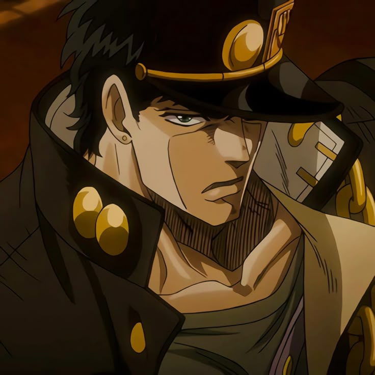

خیلی زود فهمیدم با یه انیمه معمولی طرف نیستم. از همون اول همه چیزش متفاوت بود؛ از طراحی شخصیت ها گرفته تا رنگ ها، موسیقی و حتی نحوه روایت داستان.
چیزی که خیلی برام جذابه اینه که هر پارت حال و هوا و اتمسفر خودش رو داره. انگار هر بار وارد یه دنیای جدید میشی، ولی هنوز اون هویت عجیب و خاص جوجو رو حفظ کرده. هیچ وقت حس تکراری بودن بهم نداد.
انتخاب جوجوی موردعلاقه واقعا سخته، ولی اگه بخوام یکی رو بگم احتمالا جوتارو. شخصیت پردازیش خیلی قویه؛ کم حرفه، آرومه، ولی حضورش همیشه سنگینه. لازم نیست زیاد حرف بزنه تا تاثیر بذاره.
پارت ۳ برای من پر از خاطرات خوبه و از همه نظر بیشتر به دلم نشست. هم فضای ماجراجوییش، هم استند ها و هم روند داستان. و کلا استایل جوتارو یکی از چیزاییه که همیشه برام جذاب بوده؛ ساده ولی خیلی خاص.
یه چیز جالب تر هم اینه که خیلی از جاهای مختلف از جوجو الهام گرفتن. حتی مانگاکای دیمن اسلیر هم جاهایی ازش تاثیر گرفته، و اگه دقت کنید ردش رو تو خیلی از انیمه ها، بازی ها و حتی طراحی شخصیت ها میشه دید. انگار جوجو فقط یه انیمه نیست، یه سبکه که همه جا یه جوری اثرش هست.
توی پارت ۳، این که استند ها بر اساس کارت های تاروت طراحی شدن برام خیلی خاصه. هر استند یه مفهوم پشتشه و همین باعث میشه مبارزه ها فقط فایت نباشن، یه جور نماد و معنی هم داشته باشن. این قسمت رو واقعا دوست داشتم.
جوجو از اون چیزاست که هر از گاهی دلم میخواد دوباره برم سراغش حتی با این که میدونم چی میشه باز هم یه چیزی هست که آدم رو میکشه سمت خودش.